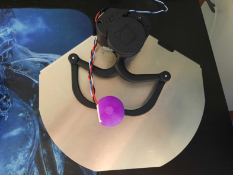

Project information
- Category: Web design, Haptic design
- Comapny: McGill University
- Project date: 01 March, 2020
- Project URL: https://image.a11y.mcgill.ca/
- github: https://github.com/Shared-Reality-Lab/IMAGE-browser
Making web-graphics accessible
IMAGE is a project by researchers in McGill University’s Shared Reality Lab, in collaboration with Gateway Navigation and the Canadian Council of the Blind (CCB), a consumer organization of Canadians who are blind, to build a web browser extension that lets you experience graphics on the web using audio and touch. Going beyond just a readout of things that are in a graphic, IMAGE conveys the locations of objects through stereo audio that fools your ears into thinking that sounds are coming from different directions and distances. IMAGE also works with two different touch devices, including the Dot, a pin array that is like a large braille display, and the Haply, which can push your whole hand in different directions on a t
What did I do?
API to control 2DOF robot
Meet the haply 2DIY:
This is a robotics device with 2 degrees-of-freedom, meaning it can move along 2-axes of motion (x & y). The haply has powerful motors which we can control to deliver forces, such as wall or push/pull motions. This device was originally being controlled using a java-based API,however, since the rest of the IMAGE project is web-based we needed to be able to control the Haply through the web. Though this might sound simple, web technologies are not ideal for maintaing control feedback loops. One of my main contributions to this project was converting this java based API to typescript and creating applications for the Haply on the web. In order to acheive this control I used a form of "threading" in typescript facilitated by the use of "web workers". Check out the project at the github repo linked above